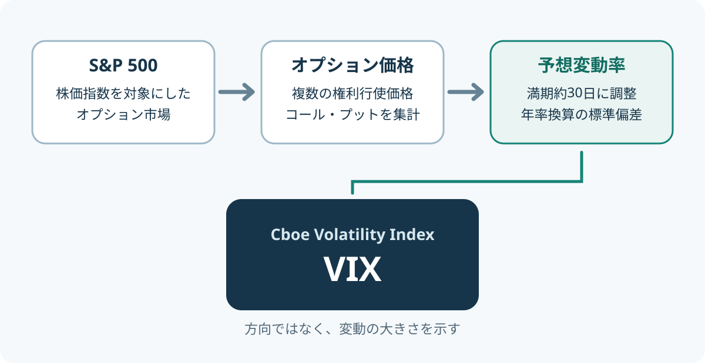

カテゴリツリーを開く
MARKET INDICATORS / VOLATILITY
VIXとは？恐怖指数の仕組みと見方
ニュースで「VIXが急上昇」「恐怖指数が高水準」といった表現を見かけることがあります。VIXは、米国株式市場の代表的な株価指数であるS&P 500について、オプション価格に織り込まれた今後約30日間の予想変動率を示す指数です。
1. VIX（恐怖指数）とは？
VIXは、Cboeが算出・公表するCboe Volatility Indexの略称です。S&P 500を対象とするオプションの価格から、今後約30日間の予想変動率を算出します。
株価指数そのものの値動きを集計するのではなく、その指数を対象とするオプションの取引価格を使う点が特徴です。オプションは、将来の一定期間に株価が大きく動く可能性への備えにも使われます。その価格には、市場参加者がどの程度の変動を意識しているかが反映されます。
市場が先行きに不安を感じ、値動きへの備えを求める動きが強まると、プット・オプションなどの需要が高まり、オプション価格やVIXが上昇することがあります。このため、ニュースなどでは「恐怖指数」と呼ばれます。ただし、VIXが投資家の感情を直接測定しているわけではありません。あくまでオプション価格から計算された、将来の変動の大きさを示す指数です。
2. VIXは何をもとに算出される？
VIXの計算には、S&P 500を対象とする複数の権利行使価格のコール・オプションとプット・オプションが使われます。対象となるのは、原則として満期まで23日超37日未満の金曜日満期のオプションです。満期が異なる近い限月（近月）と次の限月を組み合わせ、満期までの期間が常に30日となるように調整します。

計算の流れを簡単に整理
- 満期までの期間が異なる近月・次限月のSPXオプションを選ぶ。
- 複数の権利行使価格について、コール・プットの売買気配の中間値などを集める。
- 各満期のオプション価格から予想分散を計算し、30日満期になるように時間加重で補間する。
- 予想分散の平方根を取り、100倍してVIXとして表示する。
細かな計算式を覚える必要はありません。押さえておきたいのは、VIXが過去のS&P 500の値動きから計算されるのではなく、現在のオプション価格から将来の変動の大きさを推計するインプライド・ボラティリティをもとにしていることです。
なお、オプション価格には、将来の変動予想だけでなく、保険のような役割への需要やリスクを引き受ける対価なども影響します。そのため、VIXを市場参加者の純粋で偏りのない予測値とみなすことはできません。
過去のリターンのばらつきを測る標準偏差と、オプション価格から将来の変動を推計するVIXは、対象とする時間軸が異なります。過去の値動きを標準偏差で測る方法は、ボラティリティとは？で詳しく解説しています。
3. VIXの数値はどう読む？
VIXは、オプション価格から計算した予想分散を年率換算し、その平方根を取った年率換算の標準偏差として表示されます。たとえばVIXが20なら、年率換算のインプライド・ボラティリティが約20%という意味です。20%上昇するという予測でも、20ポイント下落するという意味でもありません。
30日間の変動幅に置き換える例
年率20%を30日間の目安に換算するには、期間の平方根で調整します。20% × √(30÷365) ≒ 5.7%です。これは30日間の1標準偏差に相当する変動幅の目安であり、上昇・下落のどちらかを予測しているわけではありません。
したがってVIXが20の場合、S&P 500の現在水準を中心に、およそ±5.7%が30日間の1標準偏差に相当する目安となります。たとえば指数が5,000ポイントなら、約±285ポイントです。ただし、これは確定した上下限でも、一定の確率で収まると保証された範囲でもありません。
| VIXの例 | 年率換算の予想変動率 | 30日程度に換算した目安 |
|---|---|---|
| 15 | 約15% | 約±4.3% |
| 20 | 約20% | 約±5.7% |
| 30 | 約30% | 約±8.6% |
| 40 | 約40% | 約±11.5% |
VIXの水準に、どの相場でも通用する絶対的な境界線があるわけではありません。過去の水準や市場環境と比べて、現在の市場がどの程度の変動を織り込んでいるかを見るのが基本です。標準偏差を正規分布に当てはめれば「±1標準偏差に約68%」という説明が使われますが、実際の市場リターンは常に正規分布に従うわけではありません。VIXから特定の期間の値動きの確率を正確に読み取れるわけではない点にも注意が必要です。
4. VIXと株価はどんな関係？
VIXは、S&P 500が急落する局面で上昇することが多く、株価指数とは逆方向に動く傾向があります。急落への備えとしてプット・オプションを買う需要が強まると、オプション価格が上昇し、VIXを押し上げるためです。
ただし、VIXとS&P 500が常に反対方向へ動くわけではありません。株価が上昇していても先行きへの不透明感が強まればVIXが上がることがありますし、株価が下落していても予想変動率が落ち着けばVIXが下がることがあります。
VIXは米国株市場の指標です。日本株や全世界株式の値動きを直接示すものではありません。日本の投資家が参考にする場合は、米国市場の不安定さを知る一つの材料として位置づけ、保有資産の地域構成や為替の影響も別に確認しましょう。
\nVIXは米国株の予想変動率を示す指標であり、投資家個人の資産全体のリスクを直接測るものではありません。投資対象ごとの値動きや資産の組み合わせを含めたリスクとリターンの考え方は、投資のリスクとリターンとは？も参考になります。
5. VIXで分からないこと
| よくある誤解 | 実際の意味 |
|---|---|
| VIXが高い＝株価が下がる | 上昇・下落の方向ではなく、変動の大きさを示す |
| VIXが30＝30%下落する | 年率換算の予想変動率を表し、下落率ではない |
| VIXが高い＝暴落が起きる確率が高い | 暴落確率を直接示す指標ではない |
| VIXが低い＝安全 | 市場が織り込む予想変動率が低い状態であり、急変が起きない保証はない |
| VIXは過去の値動きの平均 | オプション価格に基づく将来約30日の予想変動率 |
VIXは将来の変動の大きさを推計する指標であり、株価の方向や特定の下落イベントの発生確率を直接示すものではありません。低い水準が続いた後に、予想外のニュースで急上昇することもあります。
6. 投資判断での使い方と注意点
- 市場の緊張度を把握する：VIXの急上昇は、米国株市場で大きな変動への警戒が強まっているサインとして確認できます。
- 過去の水準と比べる：単独の数値だけで高い・低いを決めず、過去の推移や直近の変化と合わせて見ます。
- 保有資産への影響を考える：米国株の比率が高い場合などに、市場環境を確認する補助情報として使えます。ただし、保有商品のリスクをVIXだけで測ることはできません。
- 他の指標と組み合わせる：過去の値動きはボラティリティ、下落の深さは最大ドローダウン、リスクに対する超過リターンはシャープレシオなど、目的に応じて使い分けます。
VIXそのものは指数であり、株式や投資信託のようにそのまま保有することはできません。VIX先物・オプションや、それらに連動を目指す金融商品は別の仕組みを持ちます。特に先物価格は、今日のVIX現物値ではなく、将来の決済時点のVIX水準に対する市場の見方を反映します。そのため、先物を組み入れて運用する商品は、先物の限月交代や期近・期先の価格差の影響を受け、VIX現物値と異なる値動きになることがあります。
また、CboeはVIXが平均回帰的な性質を持ち、VIX先物・オプションを長期保有目的で使うべきではない点にも注意を促しています。VIXの数値を見て、連動商品を単純に買えばよいというものではありません。
まとめ
VIXは、S&P 500のオプション価格から算出される、今後約30日間の予想変動率を示す指数です。「恐怖指数」と呼ばれ、米国株市場の不安や緊張が高まる局面で上昇する傾向があります。
ただし、VIXが示すのは値動きの大きさであり、上昇・下落の方向や暴落の確率ではありません。市場の状況を把握する一つの材料として使い、過去のボラティリティや最大ドローダウンなど、別の指標と組み合わせて判断しましょう。
参考資料
- Cboe「VIX FAQ」 — VIXの目的、30日間の予想変動率、対象となるオプション、現物指数とデリバティブの違い。
- Cboe「VIX Index Methodology」 — 近月・次限月の選択、オプション価格の集計、30日満期への調整などの算出方法。
- Cboe「Volatility Trading」 — 年率換算の標準偏差、方向を示さない性質、平均回帰性と長期保有上の注意。